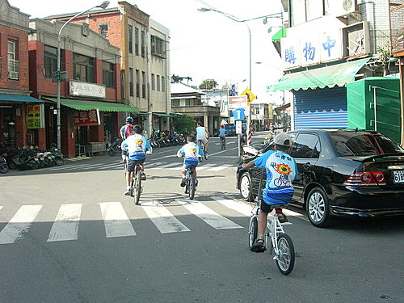

在5月24日 下午這個艷陽高照的週六假期，
帶著家人騎乘在鐵馬道上，
搭上渡輪，
來到離島旗津，
享受落日餘暉、休閒愜意的騎乘樂趣！
燦爛的陽光，開心的笑容，親子同遊，真是一場豐富的身心靈饗宴，期待再次出遊！
嗨！我們是"三隻小獅" ，對這次旗津逍遙遊，早已期待很久了。
，對這次旗津逍遙遊，早已期待很久了。
@@@人物特寫：幼稚園中班的湘湘(後穿紅衣者)，獨自以二輪車騎完全程
，甚稱最勇猛的小小獅，大家請給她拍拍手 ，她可能是本車隊的明日之星哦
，她可能是本車隊的明日之星哦
亮文與她的心肝寶貝
出發前，阿祥的全家福合照
小獅家族與其好友準備出發
臨港線的鐵馬道，綠化乾淨、平坦又舒適。說著、說著，喂！前面的，等等我啊......
妹妹口渴了嗎？要不要喝水？爸爸幫妳弄，父愛的苛護一樣偉大！
渡輪上的留影，有沒有注意到我車上的鹹蛋超人叮噹！
父與女
衝啊！騎車騎不贏人家，跑步絕不能輸
終於登上旗后砲台！
小獅與他的車友---鐵人三項的好戰友
旗后砲台俯瞰美景--湛藍的天空、蔚藍的海岸，令人心曠神怡
斑駁的牆垣刻劃著歲月的痕跡，童言童語的嬉鬧也將成為他們以後的記憶！

衝啊！離開旗后砲台，準備前往高字塔。
高字塔二港口大船麥出港！
無題
高雄港區一景，離塵不離城，多漂亮的水岸城市。
鐵馬家庭第一次出遊，出發前的大合照，雖然少了超哥、小揚、銘珠等家庭，但我們河東獅的熱情、活力有增無減！期待下次相邀來去騎腳踏車